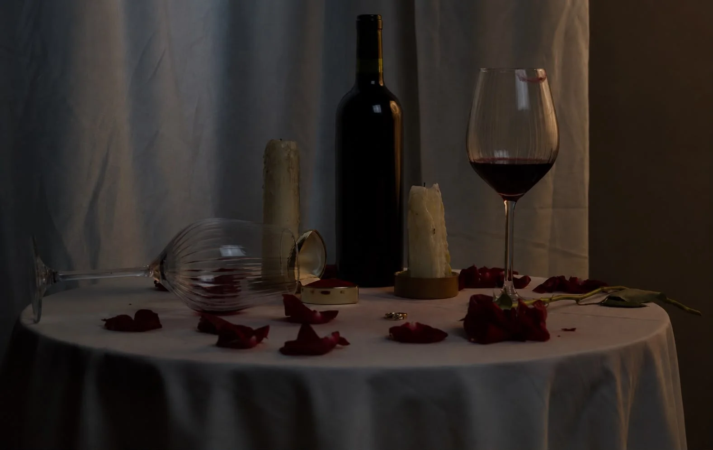

← Portafolio
Fotografía · Bodegón
La propuesta que nunca sucedió — Bodegón

- Contexto
- Fotografía digital · sexto semestre (2026-2)
- Tema
- Desamor
- En conjunto con
- Cielo Caicedo y Diego Alejandro Quintero
- Exposición
- ISO 800 · f/5.6 · 1/60 s
El pedido
Un bodegón de naturaleza muerta en el que se manejara el triángulo de exposición: el ISO, el diafragma y la velocidad de obturación.
La idea
Elegimos el desamor como tema y lo llamamos «La propuesta que nunca sucedió», con la frase «Lo que queda en la mesa cuando la respuesta es no».
Mi rol
La idea y el trasfondo los dimos Cielo y yo. Entre los tres manejamos la cámara y tomamos las fotos.